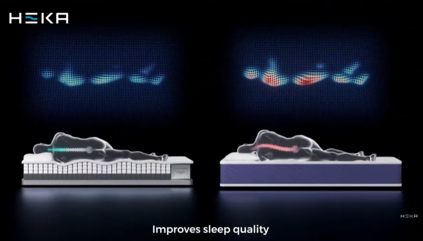

Your mattress has software now.

There was a simpler time when a mattress just sat there and silently accepted whatever chaos you brought to it. HEKA Sleep looked at that arrangement and said “nope” — their AI mattress actively adjusts itself while you sleep. Different areas can raise or lower to better fit your body, spreading weight more evenly and trying to keep you supported as you roll around and gradually abandon every healthy sleeping position you intended to maintain. If you want the official page, it’s here: hekasleep.com .
The pitch is basically: your body creates pressure points, pressure points create discomfort, and discomfort creates the nightly ritual of flipping yourself like a sad pancake. HEKA’s mattress uses sensors to measure how you’re lying, then adjusts individual zones to reduce high-pressure areas — especially on your shoulders, hips, and wherever gravity has decided to file a complaint. And yes, there’s an explainer video here: youtube.com/watch?v=jxFMDGL3Oyw . It’s the rare tech demo where the “before” looks like discomfort and the “after” looks like a heat map that finally found peace.
The wild part is that it keeps doing this as you move — quietly re-balancing support throughout the night so you don’t wake up feeling like you lost a fight with your own skeleton. It’s like sleeping on a surface that’s constantly negotiating with physics on your behalf. Is it slightly absurd that we’ve reached the era of “firmware updates for your bed”? Yes. But if it means fewer pressure points and less midnight flailing, I’ll allow it.